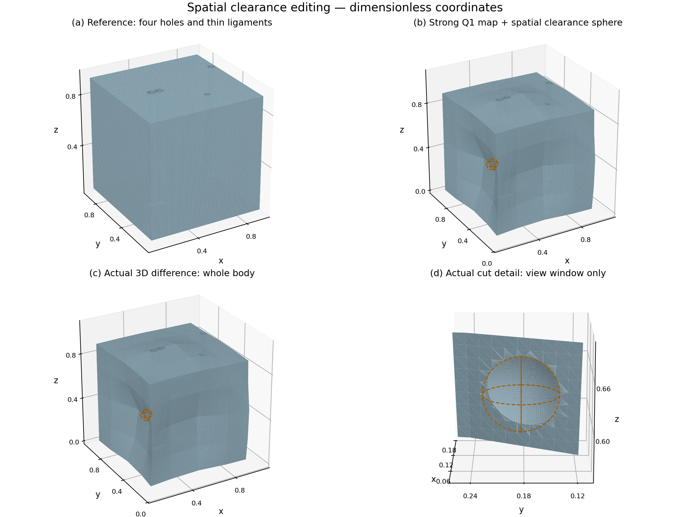
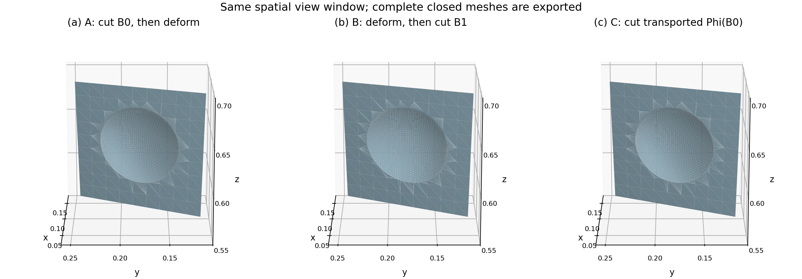
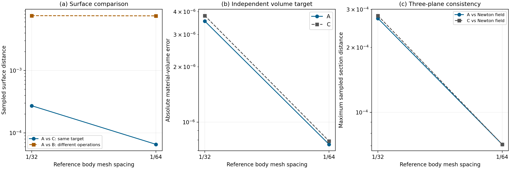
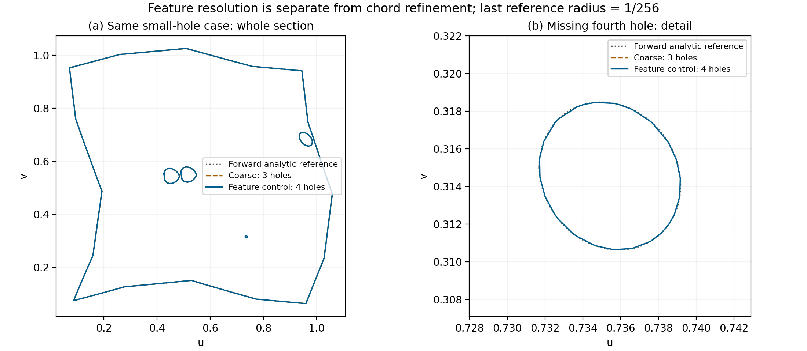

Cut, then deform
Remove the reference-space sphere B₀, then map the remaining solid.
Φ(Ω₀ ∖ B₀)DeformSolid / Computational geometry
Boolean editing and cross-section inspection on nonlinearly deformed solids. An inverse-implicit representation connects exact reference geometry to its deformed shape.

01 / Interactive geometry
Rotate the actual mesh, compare operations, and move inside the cut. These are the generated geometry outputs.
Browser display uses the coarse meshes; the comparisons below use both refinement levels. The reveal control clips the view; it does not construct a capped Boolean. OBJ downloads retain the original double-precision vertices.
02 / Operations under deformation
Cutting in reference space and cutting in the deformed scene answer different geometric questions. Transporting the tool connects them.
Remove the reference-space sphere B₀, then map the remaining solid.
Φ(Ω₀ ∖ B₀)Subtract the independently specified spatial sphere B₁ from the deformed body.
Φ(Ω₀) ∖ B₁Map B₀ with the body, then execute a 3D Boolean in deformed space.
Φ(Ω₀) ∖ Φ(B₀)
B₀: center (0.0525, 0.18, 0.62), radius 0.045. B₁: center (0.09942443490438002, 0.183131631211526, 0.6264289927536667), radius 0.045. The transported Φ(B₀) is generally not a sphere. Coordinates and volumes are dimensionless.
03 / Cross-section inspection
Compare closed contours at three fixed heights. Every displayed section has one material component and four holes.
Fine-mesh contours are shown in a shared coordinate frame. Independent inverse-field sections and local comparisons are in the section figure ↗.
04 / Native compute → GPU
A native C++ evaluator performs the Q1 map, damped Newton inversion, and analytic CSG field evaluation in double precision. No per-query Python calls.
Native CPU speedup
at 2048² cells
Dense query throughput
single-thread C++
Maximum field difference
against Python
Caller-owned buffers and a stable structure-of-arrays C ABI.
Q1 mapping → Newton inverse → analytic CSG → per-query status.
Dense GPU evaluation through the same batch contract. In development.
| Grid cells | C++ | Python | Ratio |
|---|---|---|---|
| 512² | 0.0531 s | 0.4091 s | 7.71× |
| 1024² | 0.2146 s | 1.5482 s | 7.21× |
| 2048² | 0.8514 s | 6.1203 s | 7.19× |
One warmup and five measured runs per method/grid, single-thread CPU. Native compute excludes allocation and interop; Python uses the existing chunked reference path. These are measured implementation ratios. Download timings ↓
05 / Geometric consistency
Mesh validity, closed contours, independent volume integration, and refinement connect the 3D result to its implicit definition.
Retained in all six comparison solids and all eighteen inspected mesh sections.
Fine A/C sampled surface distance for the transported-tool equivalence.
Fine transported-tool result's absolute volume error against independent Q1 integration.

A radius-1/256 hole disappears in a coarse locator grid: three holes are recovered instead of four. Feature-aware refinement restores the fourth hole; its measured contour distance is 1.03147 × 10⁻⁴, slightly above the 10⁻⁴ chord target.

Build / Explore / Extend
The current release brings together the modeling application, the native C++ numerical engine, inspectable meshes, and measured results. The CUDA GPU backend is in development.